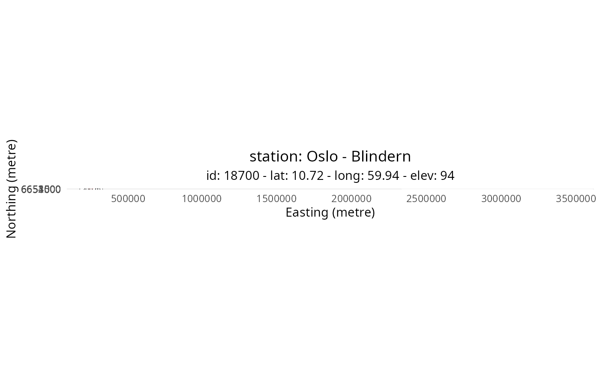

Add a grid and add buffers on a map to assess the area of same land cover type.
Examples
# Get station metadata
stn <- get_metadata_frost(stationid = 18700)
#> [1] " "
#> [1] "-------------------------------------------"
#> [1] "station MET.NO: 18700 -- OSLO - BLINDERN -- Fast_IP: 10.240.10.11:6785"
#> [2] "station MET.NO: 18700 -- OSLO - BLINDERN -- Fast_IP: 10.240.10.11:6785"
#> [3] "station MET.NO: 18700 -- OSLO - BLINDERN -- WMO: 0-20000-0-01492"
#> [4] "station MET.NO: 18700 -- OSLO - BLINDERN -- WIGOS: 0-20000-0-01492"
#> [1] "-------------------------------------------"
#> [1] " "
# Get coordinates and define boundary box
centre <- terra::crds(stn)
box <- make_bbox(centre, dx = 1600)
# Plot map tile
g <- plot_tile_station(stn, box, tile_name = "ortofoto")
# Add grid and buffer
nx <- 200
n <- 2
g <- add_grid(g, box, nx, n)
g <- add_buffer(g, centre, 300, 1000, nx, n)
#> Coordinate system already present. Adding new coordinate system, which will
#> replace the existing one.
g
#> Warning: Removed 1 row containing missing values or values outside the scale range
#> (`geom_segment()`).
#> Warning: Removed 1 row containing missing values or values outside the scale range
#> (`geom_segment()`).
#> Warning: Removed 1 row containing missing values or values outside the scale range
#> (`geom_label()`).
#> Warning: Removed 1 row containing missing values or values outside the scale range
#> (`geom_label()`).
